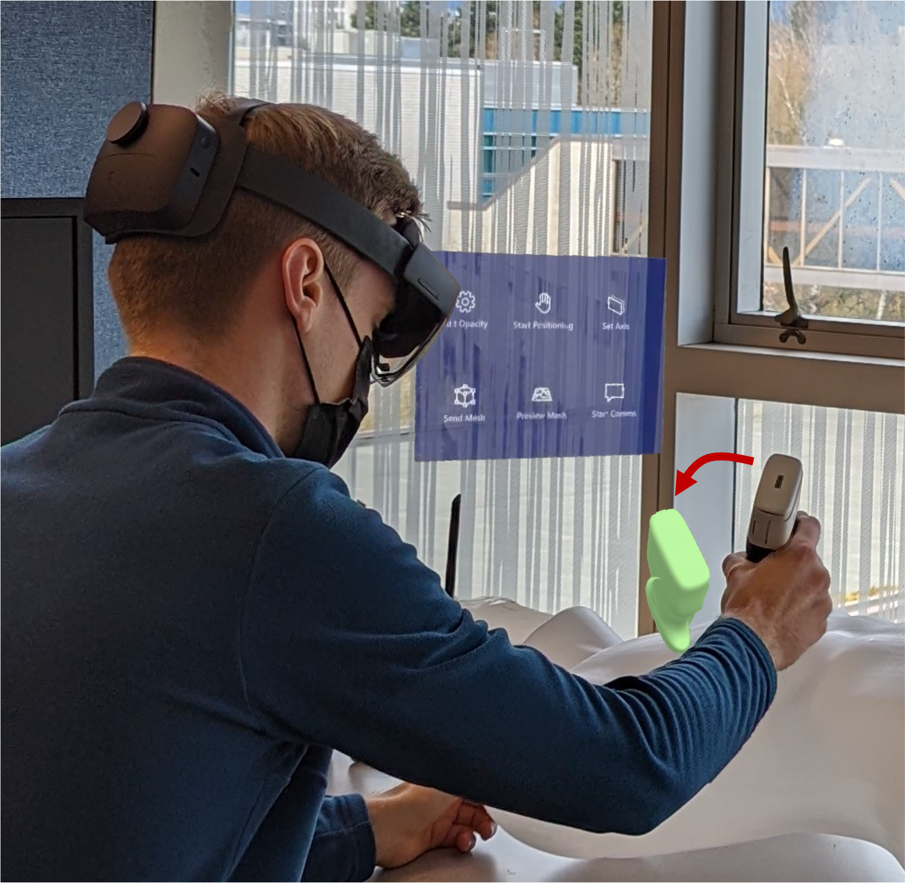
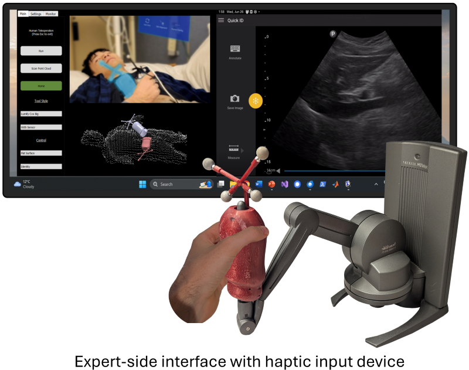
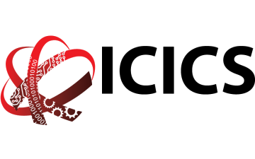
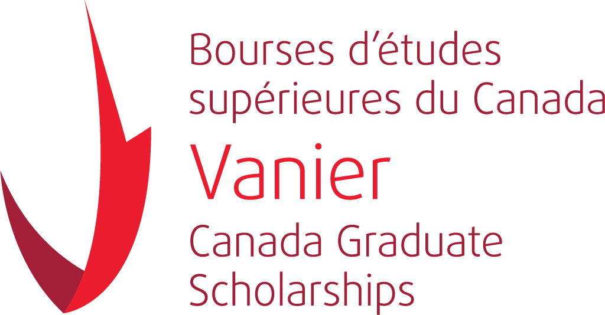
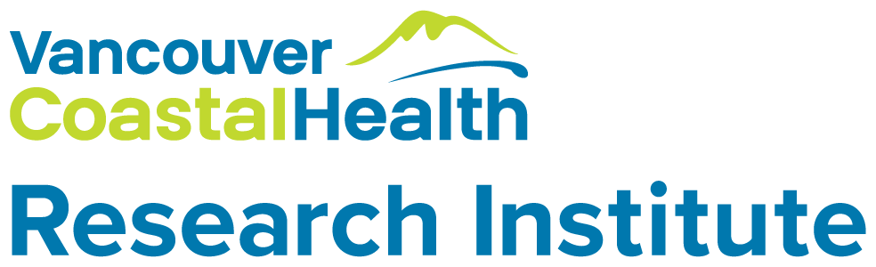

Solution
Coact Technologies is addressing the problem of ultrasound access by enabling expert ultrasound guidance in remote communities. Our system bridges the gap between robotics and video guidance, providing a solution that is simultaneously easy-to-use, low-cost, and flexible, while giving the physician precise control and immersive feedback.
We use a patent-pending combination of real-time hand-over-hand augmented reality guidance with high-speed communication and force feedback to give the expert the sensation of performing a scan in person while in fact they are guiding the motions of a novice person in a remote location.
Our approach is based on hundreds of conversations with physicians, health authorities, remote and Indigenous communities, and industry experts, and has been validating in award-winning published research.
At a glance
The novice person wears a mixed reality headset and aligns their real ultrasound probe with a virtual one. The motion of the virtual one is controlled in real time by a remote expert, who manipulates a haptic input device. They see the live-streamed video and ultrasound, communicate verbally with the novice, and receive force feedback through the haptic device so it feels as if they are performing the scan in person.
- Cloud interface:
- Secure, robust, end-to-end encrypted, ultra-fast, peer-to-peer connection between expert and follower
- Two-way verbal communication
- High-quality, low-latency video and ultrasound streaming
- Advanced teleoperation algorithms
- Expert-side interface:
- High definition video and ultrasound streams
- Device-agnostic remote control of the ultrasound machine settings
- Input device with ultrasound probe-like handle for sub-millimeter, sub-degree precision 6 degree-of-freedom input and realistic force feedback
- Patient-side system:
- Compellingly intuitive mixed reality guidance system
- Integrated transducer force, position, and orientation tracking and feedback
- Patient specific modeling and feedback
- AI assistance

Key benefits
- Intuitive and easy to use for expert and novice
- Precise, real-time guidance for an efficient, high-quality scan
- Easy, fast setup (less than 1 minute)
- Completely flexible and mobile (one pair of smart glasses and a tablet)
- Ultrasound probe agnostic for most point-of-care devices
- No robot-related safety concerns
- Massive cost savings compared to travel or robotics

Partners and Sponsors




